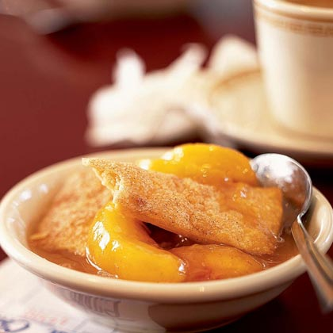

Peach Cobbler

Cobbler is a dessert consisting of a fruit (or less commonly savory) filling
poured into a large baking dish and covered with a batter, biscuit, or
dumpling (in the United Kingdom) before being baked.
Ingredients:
Peach Filling:
-
4 pounds ripe yellow peaches (about 12 medium-sized peaches), peeled,
pitted, and sliced into 1/2 inch thick wedges
- 1 cup sugar, divided 2/3 cup and 1/3 cup
-
1/2 cup instant tapioca (grind in a food processor for better texture)
- 1 teaspoon lemon zest
- 1 1/2 tablespoons lemon juice
- 2 teaspoons vanilla extract
Cobbler Topping:
- 2 cups all-purpose flour
- 1 1/4 teaspoons baking powder
- 1/2 teaspoon ground nutmeg
- 3/4 cup (6-ounces) butter, cut into 1/2 inch chunks
- 2/3 cup heavy cream
Recipe:
-
Place the peaches, 2/3 cup of the sugar, instant tapioca, lemon juice, lemon
zest, and vanilla in a large bowl and stir to evenly coat the peach slice
with everything.
Let sit for 30 minutes for the peaches to macerate and the tapioca to
soften, stirring occasionally.
- Preheat oven to 350°F
-
In a separate bowl, vigorously whisk together the flour, 1/3 cup of sugar,
baking powder, and nutmeg.
Cut the butter into the flour with your fingers or a fork until the mixture
has the texture of a coarse meal. Add the cream and stir with a fork until
the dough mixture just comes together.
-
Butter a 2 1/2 to 3 quart casserole baking dish. Spread the sliced peaches
out in an even layer. Crumble the dough mixture over the peaches.
-
Bake at 350°F until the peaches are bubbly and the topping is well browned,
about 50-60 minutes
-
Let cool 10 minutes before serving. Serve with vanilla ice cream or whipped
cream.